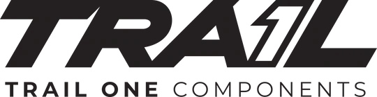

A Fundraiser For East Bay Bike Trails
Scroll Down
Come join us on August 6, 2022 for a unique, one of a kind, race experience. The Joaquin Miller Park Enduro will be a one-day event with three stages that include the best of what the park has to offer. Registration is only $99 and by participating in this event, you will be supporting many organizations such as the Bicycle Trails Council of the East Bay, the Friends of Joaquin Miller Park, and the Friends of Sausal Creek. The race is limited to 100 riders so hurry up and register now before tickets sell out!
Registration Link:
Registration for the Joaquin Miller Park Enduro will open soon.
Date:
August 6, 2022
Location:
Joaquin Miller Park, 3300 Joaquin Miller Rd, Oakland, CA 94602
Google Maps Link: https://goo.gl/maps/FbgJZTF96rtjUBH76
Registration Fee:
$100 - all race proceeds will be donated to the Bicycle Trails Council of the East Bay
Categories:
Awards:
There will be an awards ceremony at 2:00 PM when racing has finished. The top three racers from each category will receive an award. The ceremoney will be at the baywood grills at the meadow.
Riders Meeting:
Racers are required to attend the riders meeting at 7:30 AM. The riders meeting will be located at the meadow.
Packet Pickup:
Race packets will be handed out at the riders meeting.
Volunteering:
To volunteer for the race, please fill out the volunteer sign up form: https://forms.gle/ipEac6vSGojk454w7
Food:
There will be food trucks at the event.
Cancellation Policy:
Unfortunately, we do not offer refunds on event registrations.
Race Updates:
Please follow @fullsendmtbracing on instagram for race updates.
The Joaquin Miller Park Enduro will include three timed three stages: Cinderella Trail, Chaparral Trail, and Castle Park Trail. Between each stage is a 3 mile climb with 500 feet of elevation gain. Pre-riding the course is strongly reccomended. Videos of each trail are linked below:
Stage 1: Cinderella Trail (Blue Difficulty)
https://www.youtube.com/watch?v=ronv9Kx64BE
Stage 2: Chaparral Trail (Black Difficulty)
https://www.youtube.com/watch?v=zsvp-kSk-1Y
Stage 3: Castle Park (Blue Difficulty)
https://www.youtube.com/watch?v=_MIRP7b-MLg
Note: Watch from 0:22 to 2:31 to see part of the course. Unfortunately there is no video of the beginning of the course.
Course Map:
Thank you to our event sponsors for helping bring the Joqauin Miller Park Enduro to reality. If you are interested in sponsoring this event, please email nikodittmar@gmail.com.
